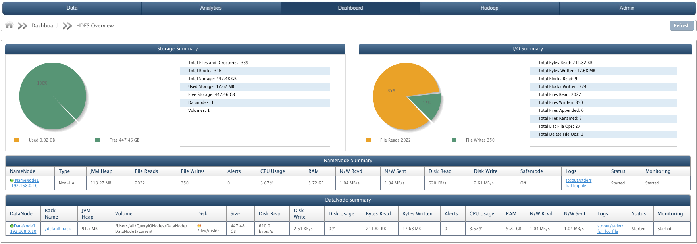

Dashboard - HDFS Overview
In this Chapter
Dashboard shows the monitoring details for QueryIO cluster.
Dashboard displays:
HDFS Overview
HDFS Overview displays storage summary and I/O summary. It also displays the NameNode summary and DataNode summary.

Storage Summary
Storage summary is gathered from DataNodes. It has a storage pie chart which shows storage space used versus storage space available.
- Total Files and Directories: Total amount of files and directories present.
- Total Blocks: Total amount of blocks present.
- Total Storage: Total storage space available.
- Used Storage: Amount of storage space used.
- Free Storage: Amount of storage space free to use.
- DataNodes: Number of DataNode from which above data is gathered.
- Volumes: Number of volumes configured to cluster.
I/O Summary
I/O summary is gathered from NameNode. It has a pie chart which shows total file reads versus total file writes.
- Total Bytes Read: Total number of bytes read.
- Total Bytes Written: Number of bytes written by user.
- Total Blocks Read: Total number of blocks read.
- Total Blocks Written: Number of blocks written to DataNode.
- Total File Read: Number of files read.
- Total File Written: Number of file writes.
- Total File Appended: Number of files appended on cluster.
- Total File Renamed: Number of file renamed on cluster.
- Total List File Ops: Number of list file operations.
- Total Delete File Ops: Number of file deletes.
NameNode Summary
It displays certain attributes about the NameNode in the cluster in a tabular form. Summary attributes are:
- NameNode: Unique Identifier and IP address of the NameNode.
- Type: Type of the NameNode i.e Active or StandBy.
- JVM Heap: The Java virtual machine heap is the area of memory used by the JVM, for dynamic memory allocation.
- File Reads: Number of read operations performed on cluster.
- File Writes: Number of write operation performed on cluster.
- Alerts: Alerts are generated when rules defined by user violates. It displays number of alerts generated.
- CPU Usage: Memory usage of NameNode system.
- RAM: Amount of random access memory available at NameNode.
- N/W Rcvd: Rate of data received on network in bytes/s.
- N/W Sent: Rate of data sent on network in bytes/s.
- Disk Reads: Rate of data written to disk in bytes/s.
- Disk Writes: Rate of data read from disk in bytes/s.
- Safemode: Safemode status as On or Off.
- Status: State of the NameNode i.e started or stopped.
- Monitoring: State of NameNode monitoring i.e. whether NameNode monitoring is started or stopped or not responding.
DataNode Summary
It displays certain attributes about the DataNode in a tabular form. It displays information about all the DataNodes in the cluster.
Summary attributes are:
- DataNode: Unique Identifier and IP address of the DataNode.
- Rack Name: Name of the rack in which DataNode is present.
- JVM Heap: The Java virtual machine heap is the area of memory used by the JVM, for dynamic memory allocation.
- Volume: Local repository of DataNode on that host.
- Disk: Label of the hard disk on which volume is mounted.
- Size: Total storage space available on DataNode.
- Usage %: Percentage of disk used.
- Bytes Read: Number of bytes read from DataNode.
- Bytes Written: Number of bytes written to DataNode.
- Alerts: Alerts are generated when rules defined by user violates. It displays number of alerts generated.
- CPU Usage: Memory usage of DataNode system.
- RAM: Amount of random access memory available at DataNode.
- N/W Rcvd: Rate of data received on network in bytes/s.
- N/W Sent: Rate of data sent on network in bytes/s.
- Disk Reads: Rate of data written to disk in bytes/s.
- Disk Writes: Rate of data read from disk in bytes/s.
- Status: State of the DataNode i.e started or stopped.
- Monitoring: State of DataNode monitoring i.e. whether DataNode monitoring is started or stopped or not responding.
Copyright © 2015 QueryIO Corporation. All Rights Reserved.
QueryIO, "Big Data Intelligence" and the QueryIO Logo are trademarks
of QueryIO Corporation. Apache, Hadoop and HDFS are trademarks of The Apache Software Foundation.